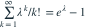
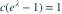

离散密度为  ，
， ，
， 。常数 c 为？
。常数 c 为？
，，。常数 c 为？- A

- B
- C
- D
我已思考，展开答案与解析
正确答案：D

。- 总概率为 1 要求

。这等价于把 Poisson 分布条件化在非零事件上。
易错提醒支持从 1 开始，不能使用从 0 开始的 Poisson 归一化常数。
JYSG · 432精选 · 册内清华大学432·2025年·2(1)；PDF第117页（印刷页115）
原大题拆解
，，。常数 c 为？
。
。这等价于把 Poisson 分布条件化在非零事件上。JYSG · 432精选 · 册内清华大学432·2025年·2(1)；PDF第117页（印刷页115）
原大题拆解